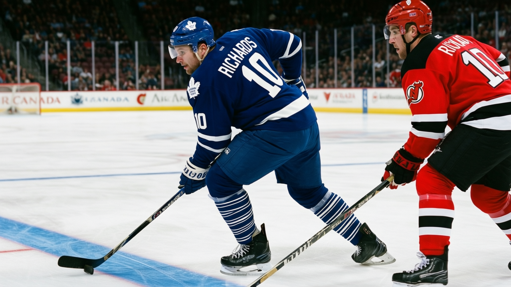

TOR
TOR PIT
PIT NYR
NYR CGY
CGY BUF
BUFDANFORTH: Gaborik is flying, Richards has 45 points, and the first January in ten years where being right feels like luck
The Panic Meter stays Green because 67 points is 67 points, and because I have finally stopped looking for the centre I wanted behind Sundin
 Frankie DanforthColumnist · Queen City Telegram
Frankie DanforthColumnist · Queen City Telegram
Code Green

I have 67 points. I have 30 wins. I beat New Jersey 4-1 on the road and 7-0 at home. I have 232 goals for and 109 against. And the only thing I can look at without grinning is the form board, where  Marian Gaborik96 carries the same hot-streak marker as Konstantin Koltsov71, neither of them hurt and both available, the day
Marian Gaborik96 carries the same hot-streak marker as Konstantin Koltsov71, neither of them hurt and both available, the day  Boston Bruins walks into my building.
Boston Bruins walks into my building.
The Panic Meter is Green. I hate that I'm writing that in January. I have spent most of my career at Yellow, most of the rest at Orange, and at least three months at Red. Green in January means 67 against 43, and the gap looks like a division crown by the All-Star break unless the bodies break.
The thing that breaks is the winger list.
Gaborik is 22 years old, 59 points in 40 games, $1.10M, contract year. He runs at plus 6 on the Bureau's Development Index, the biggest form gain on the board. He plays 19.6 minutes a night because he's the player who makes the other team turn around. When he's not out there, the ice doesn't open the same way.  Mats Sundin87 told The Tunnel's Jan Kowalczyk this week about playing alongside
Mats Sundin87 told The Tunnel's Jan Kowalczyk this week about playing alongside  Alexander Mogilny86: "He is... the first man I have played with who has the puck before I see the gap." That's Sundin on Mogilny, a 35-year-old. The winger with the speed is the one on the list.
Alexander Mogilny86: "He is... the first man I have played with who has the puck before I see the gap." That's Sundin on Mogilny, a 35-year-old. The winger with the speed is the one on the list.
The centre I wanted for twelve years is already here
 Brad Richards85 has 20 goals, 25 assists, 45 points, 17.9 minutes a night, and a salary of $1.00M. He's 24. He's in a contract year. He sits at plus 4 on the Index. I have been writing about the second-centre hole since December 2004, when Sundin turned 33 and I told you this team needed someone behind him before February. Richards has been that someone all along. The sheet says 45 points on a million dollars and the sheet doesn't flinch and I was too busy watching the wings to read it.
Brad Richards85 has 20 goals, 25 assists, 45 points, 17.9 minutes a night, and a salary of $1.00M. He's 24. He's in a contract year. He sits at plus 4 on the Index. I have been writing about the second-centre hole since December 2004, when Sundin turned 33 and I told you this team needed someone behind him before February. Richards has been that someone all along. The sheet says 45 points on a million dollars and the sheet doesn't flinch and I was too busy watching the wings to read it.
The next five: Boston at home Saturday, Pittsburgh away Monday, Boston away Wednesday, New York Rangers away Friday, Calgary at home Saturday. Three on the road. Boston twice. Pittsburgh is 10-20-5, a team I beat at their building or I don't deserve 67 points. New York is 19-13-4, the game that tests whether this roster holds up when the schedule gets mean.
If Gaborik plays Saturday and the road trip starts clean, this season is a coronation. If the winger list keeps growing, the Green turns Yellow by the Rangers game and I start the cycle again.
I trust Richards. I don't trust the medical staff to keep four fast wingers upright through February. The lead is real, but it's also a number on a sheet, and sheets don't tell you who gets flattened in a corner in March.
The Panic Meter is Green. I'm writing it with my teeth clenched, and I don't care who knows.
---
Correction. An earlier edition of this piece read the league's roster designation as an injury. It is not one: the marker carried here is a form or fitness icon, and the men named were available. Only a designation that names a body part is an injury. The passage has been corrected.